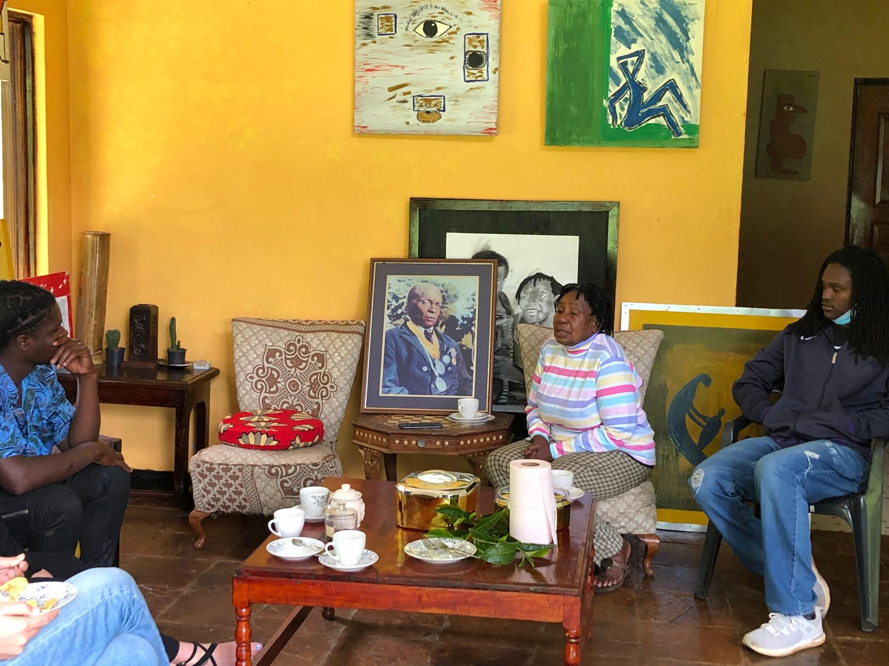

From leaf to legacy
Riara began as a family tea farm in the Limuru highlands. Over the years it has become a place where people come to learn about farming, nature and Kenyan culture.
Today we welcome families, schools, companies and travellers from around the world to see how tea is grown and made. We share what we know as farmers, educators and long-time keepers of Kenya's tea tradition.
See our toursExperiences that teach and inspire
To offer tea experiences that encourage sustainability, learning and appreciation for Kenyan agriculture and culture.
East Africa's home of tea tourism
To become the leading tea tourism and cultural heritage destination in East Africa, connecting people everywhere with where their tea comes from.
Our values
Integrity
Honest pricing and genuine hospitality.
Excellence
Every visit carefully prepared.
Sustainability
Farming in step with nature.
Education
Learning by seeing and doing.
Community
Supporting Limuru's farmers.
Kenya's Gold: Riara on Citizen TV
Riara Tea Farm was featured in Citizen TV's Kenya's Gold, a special on tea farming in Kenya. The feature takes viewers through our fields and into the story of the family behind the farm.
Come see it for yourself